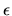
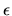

The standard error analysis just outlined has a drawback: by using the
infinity norm
to measure the backward error,
entries of equal magnitude in  contribute equally to the final
error bound
.
This means that
if z is sparse or has some very tiny entries, a normwise backward
stable algorithm may make very large changes in these entries
compared to their original values. If these tiny values are known accurately
by the user, these errors may be unacceptable,
or the error bounds may be unacceptably large.
contribute equally to the final
error bound
.
This means that
if z is sparse or has some very tiny entries, a normwise backward
stable algorithm may make very large changes in these entries
compared to their original values. If these tiny values are known accurately
by the user, these errors may be unacceptable,
or the error bounds may be unacceptably large.
For example, consider solving a diagonal system of linear equations Ax=b.
Each component of the solution is computed accurately by
Gaussian elimination:
xi = bi / aii.
The usual error bound is approximately
 ,
which can arbitrarily overestimate the true error, ,
if at least one
aii is tiny and another one is large.
,
which can arbitrarily overestimate the true error, ,
if at least one
aii is tiny and another one is large.
LAPACK addresses this inadequacy by providing some algorithms
whose backward error  is a tiny relative change in
each component of z:
.
This backward error retains both the sparsity structure of z as
well as the information in tiny entries. These algorithms are therefore
called componentwise relatively backward stable.
Furthermore, computed error bounds reflect this stronger form of backward
error4.9.
is a tiny relative change in
each component of z:
.
This backward error retains both the sparsity structure of z as
well as the information in tiny entries. These algorithms are therefore
called componentwise relatively backward stable.
Furthermore, computed error bounds reflect this stronger form of backward
error4.9.
If the input data has independent uncertainty in each component, each component must have at least a small relative uncertainty, since each is a floating-point number. In this case, the extra uncertainty contributed by the algorithm is not much worse than the uncertainty in the input data, so one could say the answer provided by a componentwise relatively backward stable algorithm is as accurate as the data warrants [1].
When solving Ax=b using expert driver xyySVX or computational routine xyyRFS,
for example, we almost always
compute  satisfying
satisfying
 ,
where
eij is a small relative change in aij and
fk is a small relative change in bk. In particular, if A is diagonal,
the corresponding error bound is always tiny, as one would
expect (see the next section).
,
where
eij is a small relative change in aij and
fk is a small relative change in bk. In particular, if A is diagonal,
the corresponding error bound is always tiny, as one would
expect (see the next section).
LAPACK can achieve this accuracy for linear equation solving, the bidiagonal singular value decomposition, and the symmetric tridiagonal eigenproblem, and provides facilities for achieving this accuracy for least squares problems. Future versions of LAPACK will also achieve this accuracy for other linear algebra problems, as discussed below.